Home / Past papers / MLT End Term / this paper
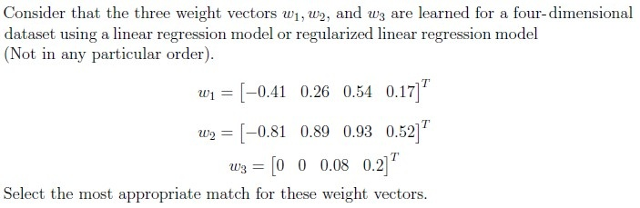
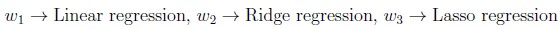
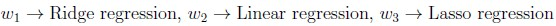
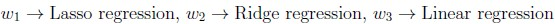
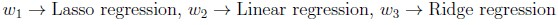
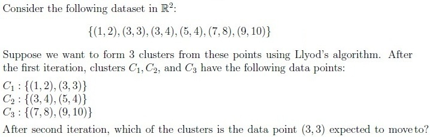
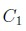
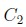
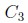
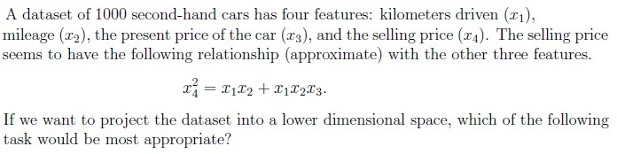
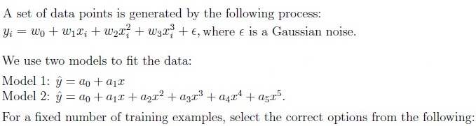
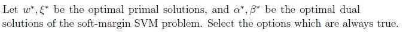
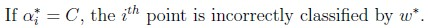
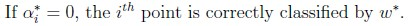
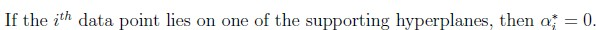
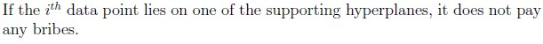
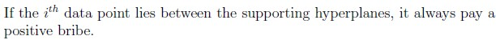
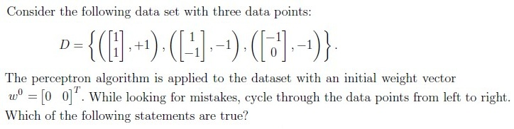
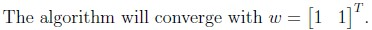
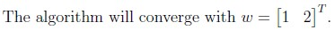
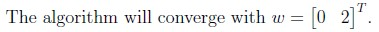
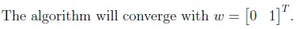
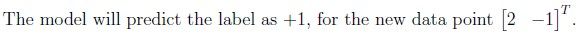
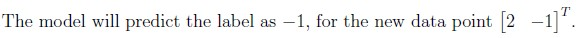
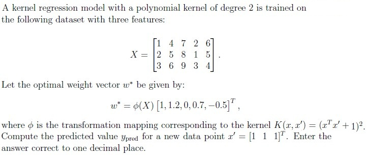
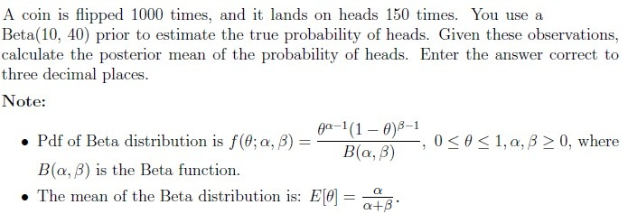
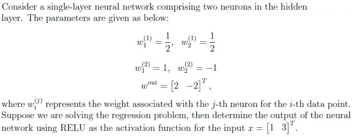
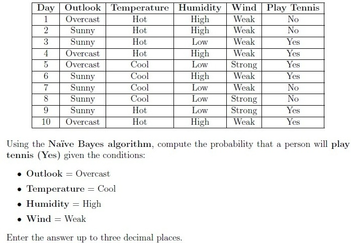
The following dataset represents different weather conditions and the corresponding decision on whether a person chooses to play tennis: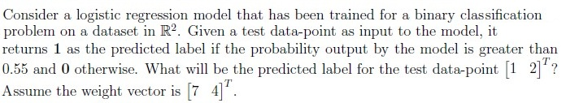
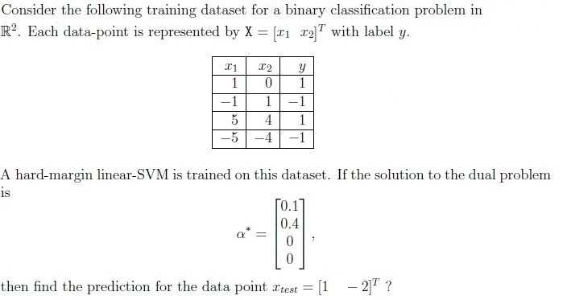
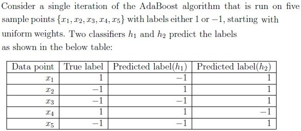
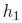
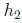
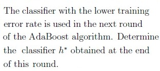
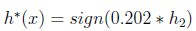
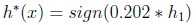
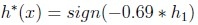
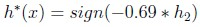
Auto-generated summary from the source site. Handy as a checklist; the lessons above explain each idea from scratch.
Here’s a structured summary of core topics, concepts, principles, and equations for the Diploma-Level Machine Learning Techniques exam, along with Mermaid knowledge graphs to visualize relationships.
Linear Regression:
Ridge Regression (L2 Regularization):
Lasso Regression (L1 Regularization):
Key Differences:
Hard-Margin SVM:
Soft-Margin SVM (with slack ):
s.t. , .
KKT Conditions:
Impurity Measures:
Splitting Criteria:
Tradeoff:
Model 1 (Linear) vs. Model 2 (High-Degree Polynomial):
Steps:
Example:
PCA (Principal Component Analysis):
Example:
Algorithm:
Error Calculation:
Example:
Activation Functions:
Forward Pass:
| Topic | Equation |
|---|---|
| Linear Regression | |
| Ridge Regression | |
| Lasso Regression | |
| Logistic Regression | , |
| SVM (Primal) | |
| SVM (Dual) | |
| Entropy | |
| Gini Impurity | |
| AdaBoost Weight Update | |
| Beta Posterior Mean | |
| Kernel PCA | (Polynomial) |
| Perceptron Update |
Regularization:
SVM:
Decision Trees:
AdaBoost:
Kernel PCA:
Bayesian Posterior: